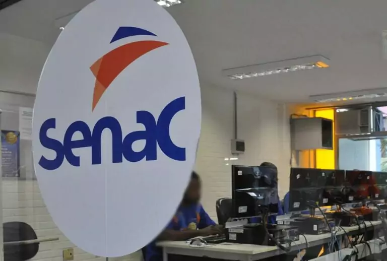

A inovação da sua carreira, começa aqui.
O curso de Tecnologia em Desenvolvimento de Sistemas tem como objetivo a formação de profissionais que venham a atuar na área de TI (Tecnologia da Informação), levantando necessidades, definindo e desenvolvendo novas soluções para organizações de diversos portes e dos mais variados ramos de atividade.
Nossa Escola
O que se aprende no curso técnico de Desenvolvimento de Sistemas?
No curso de Análise e Desenvolvimento de Sistemas, os alunos aprendem uma série de habilidades técnicas e conceituais para se tornarem profissionais qualificados na área de tecnologia da informação. Entre os conteúdos abordados, destacam-se:
Programação:
os estudantes aprendem a programar em diferentes linguagens de programação, como Java, C#, Python, entre outras, e a desenvolver algoritmos para solucionar problemas.
Banco de dados:
o curso ensina a criar e gerenciar bancos de dados, manipular informações e utilizar ferramentas para realizar consultas e análises de dados.
Engenharia de software:
os alunos aprendem a utilizar metodologias e técnicas para projetar, desenvolver e testar softwares de qualidade, garantindo a segurança, a usabilidade e a eficiência dos sistemas.
Gestão de projetos:
o curso aborda conceitos de gestão de projetos, incluindo planejamento, controle, monitoramento e avaliação, para que os alunos possam gerenciar equipes e projetos de forma eficaz.
Empreendedorismo e inovação:
o curso também estimula a criatividade e o pensamento empreendedor, preparando os alunos para identificar oportunidades de negócio e inovar na criação de soluções tecnológicas.
Contato
(51)9 98254-6548.
senactech@rede.com.br